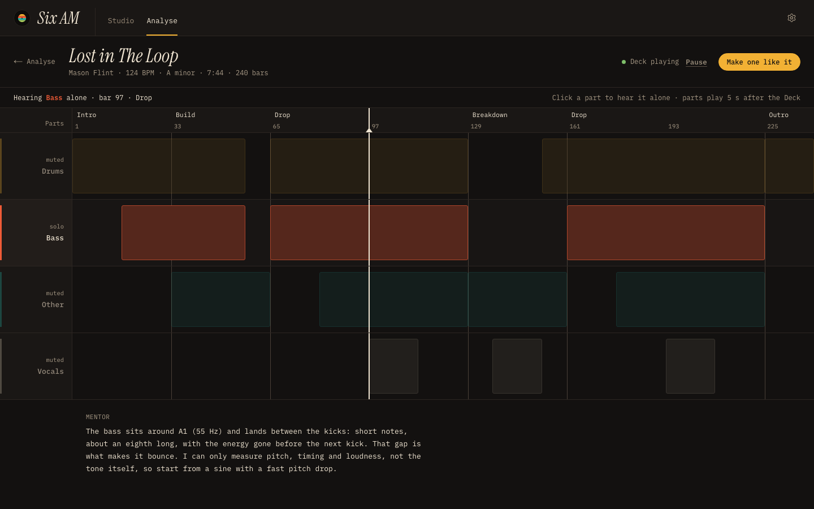
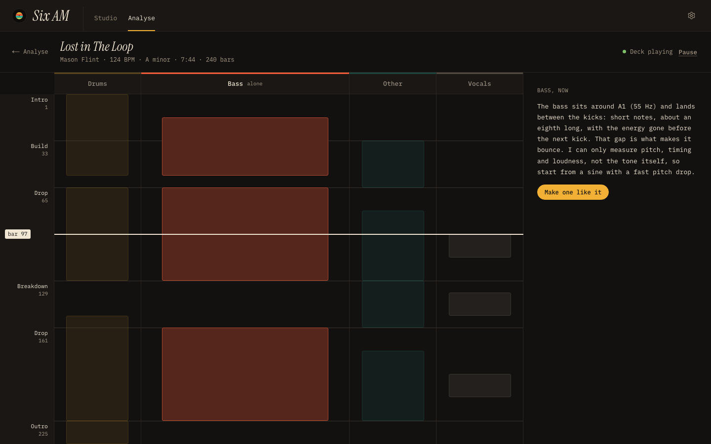
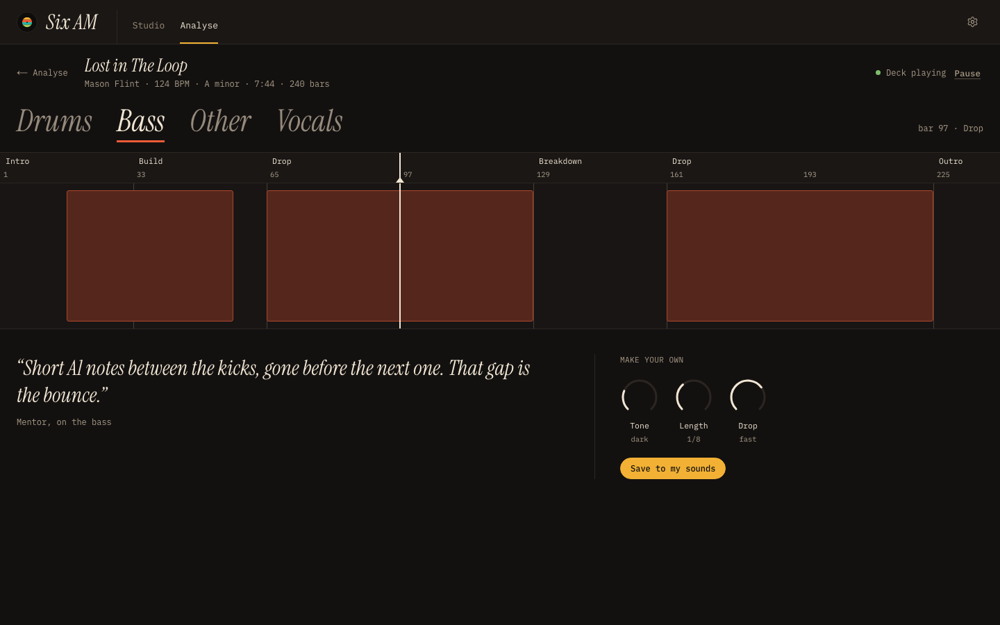
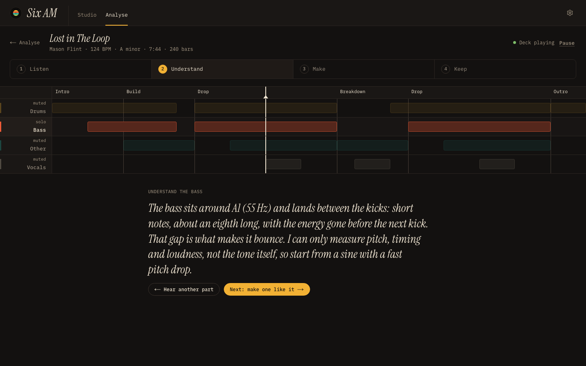
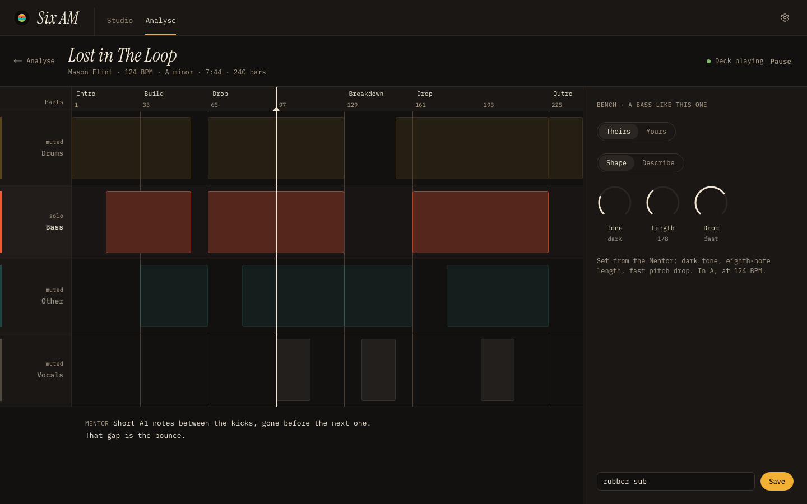
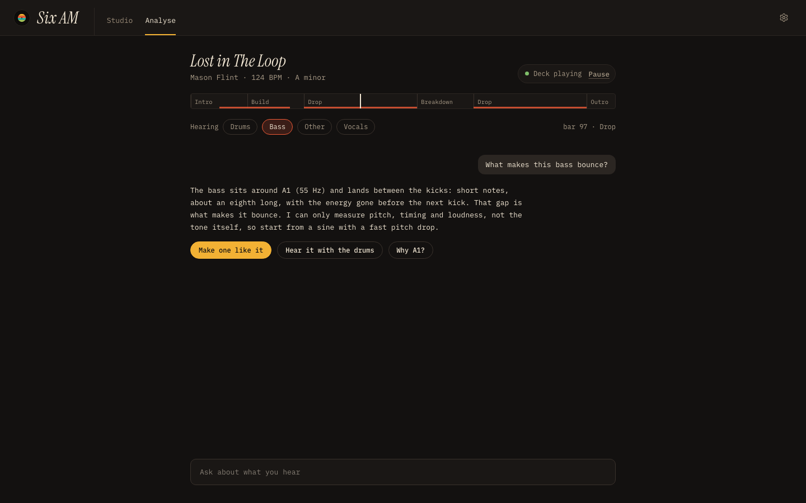
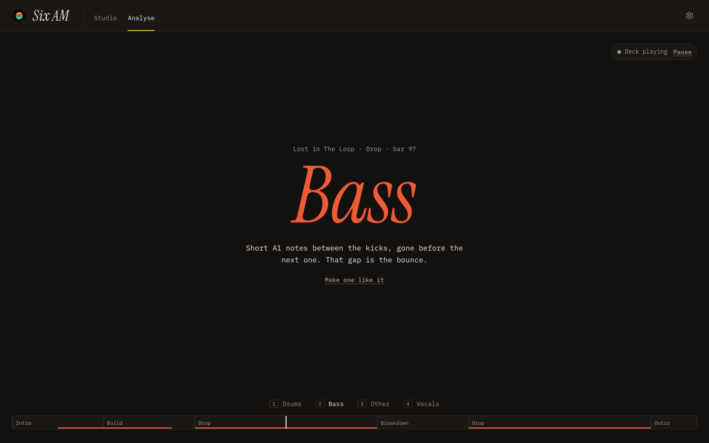
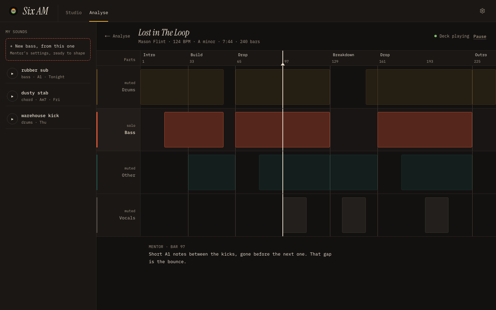
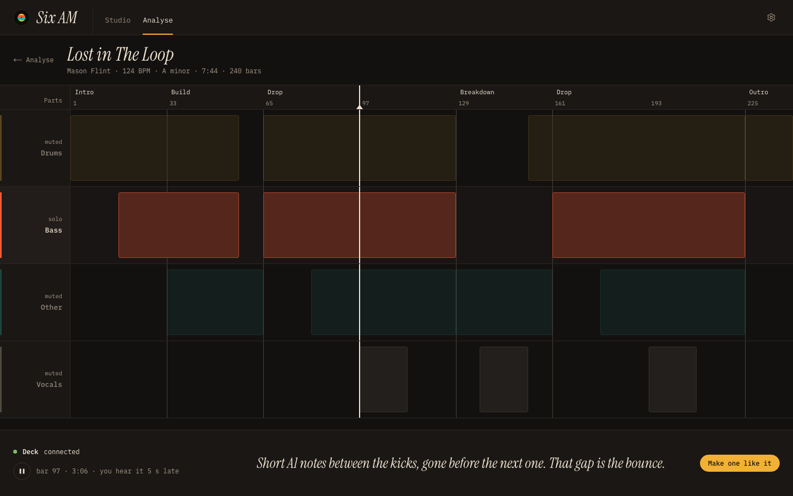
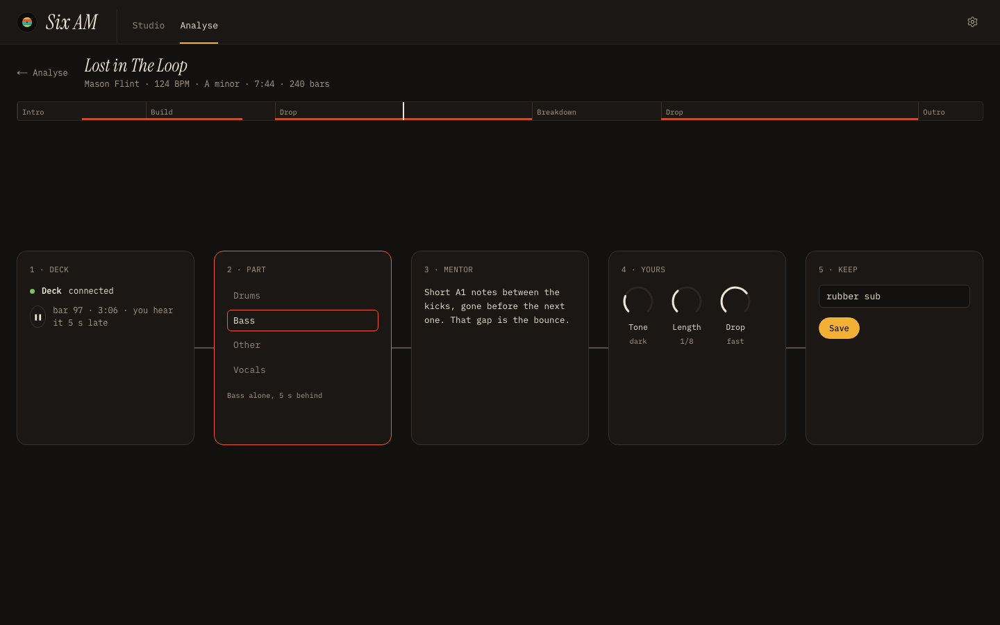

Six AM · The Lab, ten directions
Rough prototypes, same moment in each: Lost in The Loop, 124 BPM, A minor, 7:44, 240 bars, bar 97 of the first Drop, the bass playing alone, the Deck connected. Pick three. Tap an image for full size.

1 Map The map as it is, with headphones on: four part lanes, click a name to hear it alone; Deck status and one gold action in the head; the Mentor's note under the map. (seed 1)

2 Columns Time runs down the page; the four parts stand side by side and the one you hear is wide; the Mentor and the action in a side column. (seed 2)

3 Tabs The four parts are the page's big serif tabs; only the chosen part's lane shows, the Mentor as a quote and three knobs below. (seed 3)

4 Steps One step at a time: Listen, Understand, Make, Keep. A slim map on top; each step gets the whole page below it. Shown at Understand. (seed 4)

5 Bench Everything visible: the map on the left, a workbench on the right with Theirs/Yours, Shape/Describe, the Mentor's knob settings and Save.

6 Mentor The Mentor leads: a conversation column, part chips and a one-line map strip above it; actions come as replies.

7 Room The listening room: almost nothing on screen, the part you hear in huge type, one Mentor line, parts on keys 1 to 4, a strip at the foot.

8 Crate Your sound library frames the screen: My sounds on the left with a 'new bass, from this one' slot; the map in the middle.

9 Subtitles The map fills the screen; the Mentor speaks in a film-subtitle line in a bottom dock beside the Deck control and the action.

10 Chain Sounds wrong: a pedalboard. Five boxes wired left to right, Deck → Part → Mentor → Yours → Keep.